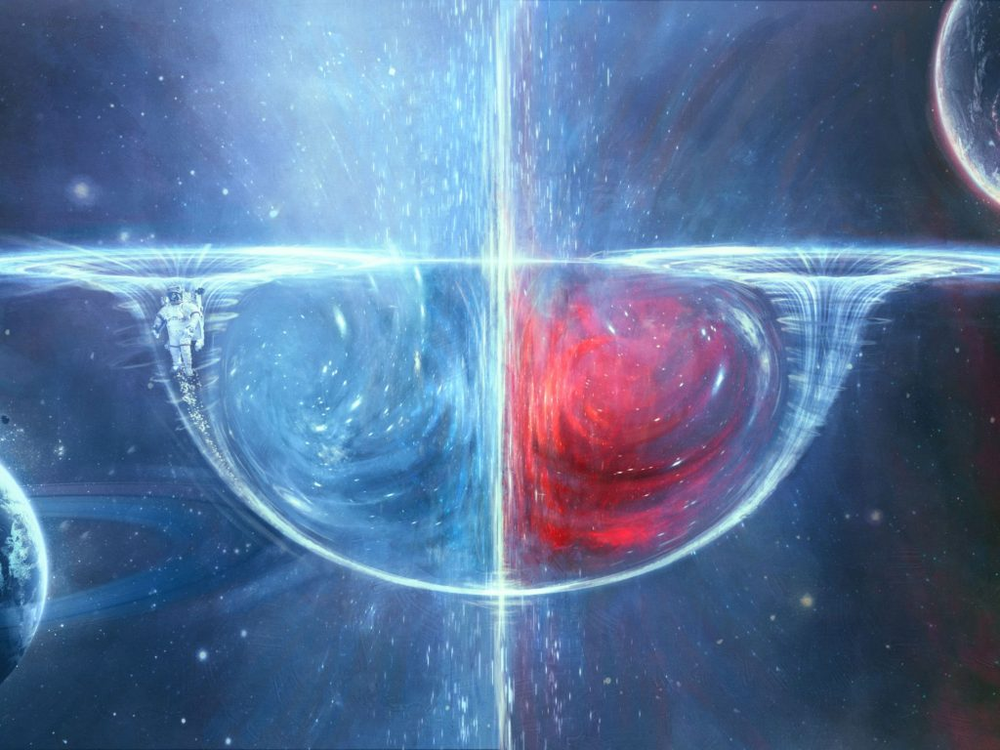
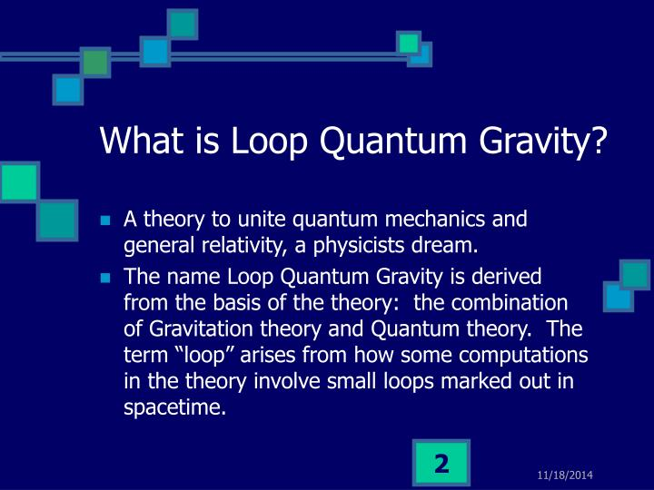
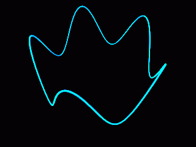

This multi-part post is devoted to the issue of travelling between the stars within the lifetime of a human. It does not necessarily mean that the propulsion method would be so fast as to exceed the speed of light, though that possibility does exist. It simply is a discussion on how the great gulfs between the stars can be traversed using contemporaneous human technology. As such, it purposely omits dimensional gates and transport portals. I most certainly do not have the answers regarding this most interesting of subjects. This post discusses this issue because one of the first things a debunker does is complain that engineering solutions are unattainable. I discuss these issues and more. It is a good read.
The sections
This is part 3 of a four part post. This post consists of four sections as described;
- Part 1 – Introduction to FTL technology
- Part 2 – The Techniques
- Part 3 – Other FTL alternatives – You are here.
- Part 4 – Conclusion and Summary
Some basics
This is part three.
This is the introduction that was provided in section / part one…
First off, MAJestic as well as our benefactors have techniques and mechanisms that permit geographical travel anywhere in the universe without using a vehicle. This technology also enables such things as world-line travel, dimensional travel, and time travel.
This is a very powerful technology, but is not the subject at hand. Here, we will talk about technologies that can be used to traverse large physical distances in relatively short periods of time, without using dimensional portals or gates.
The benefit in this technology is obvious. You need to physically go to a location in order to establish “jump gate” coordinates for it. This will require physical presence, and that means physical travel. (Of course, there are other things that one can do, like trial by error, robots and probes, but please follow my train of thought on this.)
Here we discuss ways to travel “very fast” in our universe, by using existing and known technologies without using a dimensional portal or gate.
Other Alternatives Worth Considering
The speed-of-light limit only applies to motion through four-dimensional spacetime. Perhaps wormholes are possible. That is a concept for which Kip Thorne gets the credit (or the blame). It is an old, but still valid, argument for how traveling through vast distances might be circumvented.
Wormholes
Wormholes were first theorized in 1916 (although they weren’t called that at the time), derived from Einstein’s equations for relativity.
A wormhole connects two points in space via a sort of tunnel through a higher dimension. An object entering one end of a wormhole would emerge almost instantly on the other end, even if the openings were separated by trillions of miles.

In the 1980’s, Thorne, who is the Feynman Professor of Theoretical Physics, Emeritus, at the California institute of Technology, kicked off a serious discussion among physicists about whether or not an object (like a spaceship) could physically travel through a wormhole.
In other words, do the laws of physics forbid it?
Or, with unlimited resources and knowledge, could a civilization build a wormhole and use it as a cosmic highway?
Physicists, including Thorne, have made some progress on this question.
Scientists knew prior to the 1980s that if wormholes existed, they would evaporate before anything (even light) could pass from one opening to another. So sending something through a wormhole would require a kind of scaffolding made from “exotic matter” to hold the wormhole open.
In addition, wormholes for travel would likely need to be artificially constructed, because there is no solid evidence that they exist naturally.
“We see no objects in our universe that could become wormholes as they age,” Thorne writes in his book “The Science of Interstellar” (W.W. Norton & Co. 2014).
By contrast, scientists see huge numbers of stars that will eventually collapse to form black holes. There is a possibility that very, very small wormholes exist in the universe in something called “quantum foam,” which may or may not exist in the universe.
Thorne’s question on the possibility of interstellar travel through wormholes remains unanswered.
Spacetime stretching
Or, alternatively, perhaps spacetime itself can be stretched as proposed by the relativist Miguel Alcubierre (as discussed previously). There is no speed-of-light limit to spacetime stretching. After all, spacetime beyond the Hubble horizon must be receding from us at v>c.
The Alcubierre “warp drive” (Class. Quant. Grav., 11-5, L73-L77, 1994) shows that spacetime warping and stretching around a bubble of flat spacetime is mathematically consistent with general relativity.
Dimensional Shifting
Modern superstring and M-brane theory imply the existence of numerous additional dimensions. Recent work indicates that these additional dimensions may be much larger than the Planck scale.
The article “The Universe’s Unseen Dimensions” by Nima Arkani-Hamed, Savas Dimopoulos and Georgi Dvali in the August 2000 issue of Scientific American, for example, is a good summary of some current thinking on additional spatial dimensions as large as a millimeter:
"Our whole universe may sit on a membrane floating in a higher-dimensional space. Extra dimensions might explain why gravity is so weak and could be the key to unifying all the forces of nature."
Perhaps it is possible to lift off the membrane-universe constituting our four-dimensional spacetime, move in one of the additional dimensions where speed-of-light limits may not apply, and reenter our membrane-universe very far away.
All of this is speculation of course, but it is worth noting that disappearing in place, changing shape or sometimes jumping discontinuously from location to location is frequently reported in extraterrestrial vehicle observations.
Such behavior could conceivably be associated with motion into and out of a perpendicular dimension.
MAJestic Dimensional Portal
And now, I am going to talk about something in much more detail than I have in the past. I am going to discuss (just a little bit) about the fixed dimensional portal that I utilized during my egress back in 1981. I must admit that what I know of is limited in scope. As I was never specifically trained on this technology.
Never the less, I do know a few things.
Introduction
One of the most amazing technologies that I have encountered occurred during my first egress once I joined MAJestic. This was a fixed dimensional portal that was used as a transport node. It is my understanding that the technology enables anyone to travel to any geographic region, within any point in “time”, and upon any world-line, provided the proper coordinates are established and properly entered.
This technology is not a human invention. It is an acquired technology.
Now, I had initially thought that this technology was some sort of “off shoot” of earlier work in high-voltage physics, such as with the “Philadelphia Experiment” and other obscure mysterious events like the “Nazi Bell”, but to be truthful, I have no idea if any of those (well publicized) events actually occurred. Nor if they actually contributed to this technology in any way.
Instead, it is pretty clear to me that this technology is a gift from our benefactors to facilitate MAJestic interaction with them. It is not a derived human invention.
Essentially, this technology consists of an invisible “door”, that one can walk through. It will take you to another geographic location, or another time, or another world-line, as long as the coordinates are properly specified.
And that is the key. It is not enough to be able to have the mechanism and to be able to power it. You need to absolutely know your destination coordinates in exacting detail relative to your egress portal.
<redacted>
Basic Function of Operation
From what I can gather, the operation is rather simple. It requires a number of key components which work together to create the “door” or “portal” that appears.
The most important component is the <redacted>.
<redacted>
Upon leaving the portal, the individual will feel like they are covered in water and are all wet. I do not know why this is the case. But that feeling disappears within three seconds or so.
The Technology
<redacted>
Coordinates
To properly utilize this portal, it is imperative that the proper destination coordinates be input into the mechanism. As the device intuitively interacts with the “passenger”, it is important for the calibration of the particular “mapped travel sequence” be exacting and precise.
<redacted>
The way that the coordinates are compiled and established are alien to what one would expect. Instead of an alpha-numerical sequence of digits, there is a much more complex sequence. It’s complexity betrays it’s capability.
<redacted>
Conclusion
I am sorry that this explanation on this most substantive and interesting technology be so abbreviated. As I had mentioned previously, I was not trained in the operation of the device, or participated in any education regarding it. This technology is considered to be beyond the ability of mankind at this time, and thus the understanding of it’s operation is beyond the scope of most students of this matter.
As I have placed the caveats in regards to this, it is my understanding that the mechanism is quite robust and reliable.
Finally, there is absolutely no way that this technology will never make it to the public domain until long after the human sentience has been sorted out and the the human species is well pacified and established.
Some final notes and considerations on the Planck scale
The alternatives to the propulsive methods as described in parts one and two all operate on the Planck Scale. Indeed, this is the bedrock of our physical universe.
Planck’s length is the (tiny) dimension at which space-time stops being continuous as we see it. It is where things take on a discrete graininess made up of quanta, the “atoms” of space-time.
The universe at this dimension is described by quantum mechanics. Quantum gravity is the field of enquiry that investigates gravity in the framework of quantum mechanics.
Gravity has been very well described within classical physics, but it is unclear how it behaves at the Planck scale.
An interesting study published in Physical Review Letters (Key Name: Pranzetti), presented an important result obtained by applying a second quantization formulation of loop quantum gravity (LQG) formalism.
LQG is a theoretical approach within the problem of quantum gravity, and group field theory is the “language” through which the theory is applied in this work.

I tell the reader this; LQG should be applied to other areas to fully appreciate the benefits that quantum technologies can have on physical systems.
"The idea at the basis of our study is that homogenous classical geometries emerge from a condensate of quanta of space introduced in LQG in order to describe quantum geometries," Thus, we obtained a description of black hole quantum states, suitable also to describe 'continuum' physics—that is, the physics of space-time as we know it."
A “condensate” in this case is a collection of space quanta. All of which share the same properties so that even though there are huge numbers of them, we can nonetheless study their collective behavior. And do so by referring to the microscopic properties of the individual particle.
So now, the analogy with classical thermodynamics seems clearer—just as fluids at our scale appear as continuous materials despite consisting of a huge number of atoms, similarly, in quantum gravity, the fundamental constituent atoms of space form a sort of fluid—that is, continuous space-time.

A continuous and homogenous geometry (like that of a spherically symmetric black hole) can, as Pranzetti and colleagues suggest, be described as a condensate…
…which facilitates the underlying mathematical calculations…
…keeping in account an a priori infinite number of degrees of freedom .
"We were therefore able to use a more complete and richer model compared with those done in the past in LQG, and obtain a far more realistic and robust result, this allowed us to resolve several ambiguities afflicting previous calculations due to the comparison of these simplified LQG models with the results of semiclassical analysis as carried out by Hawking and Bekenstein".
I view all this in a very simplistic manner. At the Planck scale, the LGQ is the nexus of time (world-line variations) and space (dimensional variations), and thus the control at the LGQ serves as the key to inter-dimensional transport.
Next…
This was part three of a four part post. To continue to part four, please go HERE.